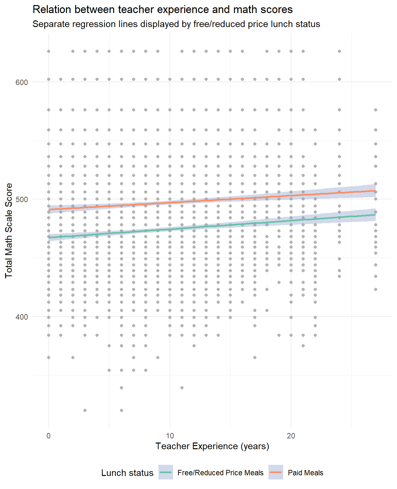

Homework 6
Note, this is a group project. You will need to work with your final project group on this lab. Each member of your group should make at least one commit. Once you have completed the assignment, provide a link to the repository in the text box for the lab on Canvas.
Commit 1
- Add a data folder to the repo. Place star.csv into the folder.
- Add a folder for your scripts documents.
- Write code in a
.qmddocument to load all the libraries that will be used in the document - Set global YAML options to make the code not show anywhere in the document, set figure width to 6.5 and figure height to 8, and specify a .pdf file as output.
- Write the code to load the data.
Commit 2
- Add the bibliography (.bib) file and include at least four additional references.
- Include in-text examples of citations formatted as Author (Year) and (Author, Year).
- Render the document and make sure the reference section has a Level 1 header of “References”, and the references are displayed on their own page.
Commit 3
- Write the code to create the summary statistics shown in the table below. Output the table below and briefly describe it in text.
| sex | frl | math_mean | math_sd | rdg_mean | rdg_sd |
|---|---|---|---|---|---|
| boy | no | 492.85 | 46.34 | 441.46 | 32.32 |
| boy | yes | 469.87 | 46.09 | 425.38 | 26.63 |
| girl | no | 501.21 | 45.96 | 448.54 | 34.52 |
| girl | yes | 477.51 | 46.30 | 430.80 | 27.42 |
Commit 4
- Create the following plot, using whatever theme you’d like, and briefly discuss it in text. (Note that might need to problem-solve how to put the legend at the bottom.)